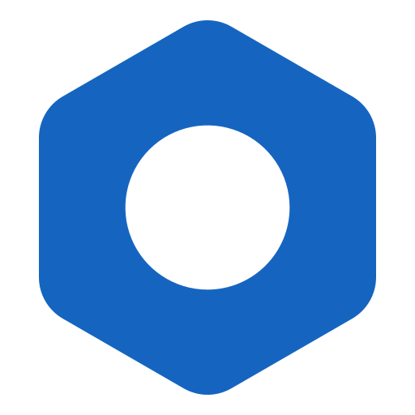

<!DOCTYPE html>
<html lang="en">
<head>
    <meta charset="UTF-8">
    <meta name="viewport" content="width=device-width, initial-scale=1.0">
    <title>Nydo Theme for Paymenter - Official Documentation</title>

    <link rel="preconnect" href="https://fonts.googleapis.com">
    <link rel="preconnect" href="https://fonts.gstatic.com" crossorigin>
    <link href="https://fonts.googleapis.com/css2?family=Inter:wght@300;400;500;600;700&family=Montserrat:wght@600;700;800&display=swap" rel="stylesheet">

    <link rel="stylesheet" href="https://cdnjs.cloudflare.com/ajax/libs/font-awesome/6.5.2/css/all.min.css" integrity="sha512-SnH5WK+bZxgPHs44uWIX+LLJAJ9/2PkPKZ5QiAj6Ta86w+fsb2TkcmfRyVX3pBnMFcV7oQPJkl9QevSCWr3W6A==" crossorigin="anonymous" referrerpolicy="no-referrer" />

    <style>
        /*
         * CORE CSS STYLES FOR THE NYDO THEME DOCS (V6)
         */

        /* --- Color Palette & Variables --- */
        :root {
            --nydo-primary: #5a7bfb;          
            --nydo-dark-bg: #0d101a;          
            --nydo-surface: #1a1e28;          
            --nydo-text: #eef2f5;             
            --nydo-text-secondary: #9aa5b1;   
            --nydo-border: #2c323f;           
            --nydo-code-bg: #1f232e;          
            --nydo-hover-bg: #2a303f;         
            --nydo-link: var(--nydo-primary);
            --nydo-shadow-light: rgba(0, 0, 0, 0.2);
            --nydo-shadow-medium: rgba(0, 0, 0, 0.4);
            --nydo-shadow-dark: rgba(0, 0, 0, 0.6);
        }

        /* --- Global Styles --- */
        * {
            box-sizing: border-box;
            margin: 0;
            padding: 0;
            scroll-behavior: smooth;
        }

        body {
            font-family: 'Inter', sans-serif;
            background-color: var(--nydo-dark-bg);
            color: var(--nydo-text);
            line-height: 1.6;
            transition: background-color 0.3s, color 0.3s;
            -webkit-font-smoothing: antialiased;
            -moz-osx-font-smoothing: grayscale;
        }

        .layout {
            display: grid;
            grid-template-columns: 320px 1fr;
            gap: 2rem;
            padding: 2rem;
            min-height: 100vh;
        }

        /* --- Mobile Layout (Hamburger Menu) --- */
        .sidebar {
            background-color: var(--nydo-surface);
            padding: 2.5rem 1.5rem;
            border-radius: 12px;
            box-shadow: 0 4px 15px var(--nydo-shadow-medium);
            border: 1px solid var(--nydo-border);
            position: sticky;
            top: 2rem;
            height: calc(100vh - 4rem);
            overflow-y: auto;
            z-index: 100;
            transition: transform 0.3s ease-in-out;
        }
        
        .main-content {
            flex-grow: 1;
            display: flex;
            flex-direction: column;
        }
        
        .menu-toggle {
            display: none;
            position: fixed;
            top: 20px;
            left: 20px;
            background: var(--nydo-surface);
            color: var(--nydo-text);
            padding: 10px;
            border-radius: 8px;
            border: 1px solid var(--nydo-border);
            cursor: pointer;
            z-index: 200;
        }

        @media (max-width: 1024px) {
            .layout {
                grid-template-columns: 1fr;
                padding: 1rem;
                gap: 1rem;
            }
            .sidebar {
                position: fixed;
                top: 0;
                left: 0;
                transform: translateX(-110%);
                height: 100%;
                width: 280px;
                padding: 5rem 1.5rem;
                border-radius: 0;
                border: none;
                box-shadow: 2px 0 8px var(--nydo-shadow-dark);
            }
            .sidebar.open {
                transform: translateX(0);
            }
            .menu-toggle {
                display: block;
            }
            .main-content.dimmed {
                filter: brightness(0.5);
                pointer-events: none;
            }
        }

        /* --- Sidebar & Navigation --- */
        .logo {
            font-family: 'Montserrat', sans-serif;
            font-size: 1.8rem;
            font-weight: 800;
            color: var(--nydo-primary);
            margin-bottom: 2.5rem;
            display: flex;
            align-items: center;
            letter-spacing: -0.05em;
        }

        .logo img {
            width: 40px;
            height: 40px;
            margin-right: 1rem;
            border-radius: 6px;
        }
        
        .nav-section-title {
            font-family: 'Montserrat', sans-serif;
            font-size: 0.8rem;
            font-weight: 700;
            text-transform: uppercase;
            letter-spacing: 0.1em;
            color: var(--nydo-text-secondary);
            margin-top: 2rem;
            margin-bottom: 0.75rem;
            padding-left: 0.5rem;
        }

        .nav-item {
            display: flex;
            align-items: center;
            color: var(--nydo-text);
            text-decoration: none;
            padding: 0.85rem 1rem;
            border-radius: 8px;
            margin-bottom: 0.35rem;
            transition: background-color 0.2s ease, color 0.2s ease, transform 0.1s ease-out;
            font-weight: 500;
            border: 1px solid transparent;
        }

        .nav-item .fa-solid {
            margin-right: 1rem;
            width: 1.25rem;
            text-align: center;
            color: var(--nydo-text-secondary);
            transition: color 0.2s ease;
        }

        .nav-item:hover {
            background-color: var(--nydo-hover-bg);
            color: var(--nydo-primary);
            transform: translateX(3px);
            border-color: var(--nydo-primary);
        }
        
        .nav-item.active {
            background-color: var(--nydo-primary);
            color: var(--nydo-dark-bg);
            font-weight: 600;
            box-shadow: 0 4px 10px var(--nydo-shadow-medium);
            border-color: var(--nydo-primary);
        }
        
        .nav-item.active .fa-solid {
            color: var(--nydo-dark-bg);
        }

        /* --- Main Content Area --- */
        #content-container {
            flex-grow: 1;
            max-width: 960px;
            margin: 0 auto;
            padding: 3rem;
            background-color: var(--nydo-surface);
            border-radius: 12px;
            border: 1px solid var(--nydo-border);
            box-shadow: 0 4px 15px var(--nydo-shadow-medium);
        }
        
        h1, h2, h3, h4 {
            font-family: 'Montserrat', sans-serif;
            color: var(--nydo-primary);
            margin-top: 2.5rem;
            margin-bottom: 1.25rem;
            font-weight: 700;
            line-height: 1.2;
            letter-spacing: -0.03em;
        }
        
        h1 { font-size: 2.8rem; margin-top: 0; }
        h2 { font-size: 2.2rem; }
        h3 { font-size: 1.7rem; }
        h4 { font-size: 1.3rem; margin-bottom: 1rem; }

        p, ul, ol, li {
            font-size: 1.05rem;
            color: var(--nydo-text);
            margin-bottom: 1rem;
        }
        
        ul, ol {
            padding-left: 1.5rem;
        }

        li {
            margin-bottom: 0.5rem;
        }

        strong {
            color: var(--nydo-primary);
        }
        
        a {
            color: var(--nydo-link);
            text-decoration: none;
            transition: color 0.2s ease;
            font-weight: 500;
        }
        
        a:hover {
            text-decoration: underline;
            color: var(--nydo-primary);
        }
        
        /* --- Code Blocks & Syntax Highlighting --- */
        pre {
            background-color: var(--nydo-code-bg);
            border: 1px solid var(--nydo-border);
            border-radius: 10px;
            padding: 1.5rem;
            overflow-x: auto;
            white-space: pre-wrap;
            word-wrap: break-word;
            margin: 2rem 0;
            line-height: 1.4;
            position: relative;
            font-size: 0.95rem;
            box-shadow: 0 4px 15px var(--nydo-shadow-medium);
        }

        code {
            font-family: 'Fira Code', 'JetBrains Mono', 'Courier New', monospace;
            background-color: var(--nydo-code-bg);
            padding: 0.2em 0.4em;
            border-radius: 4px;
        }

        pre code {
            padding: 0;
            background-color: transparent;
            display: block;
        }

        .copy-btn {
            position: absolute;
            top: 10px;
            right: 10px;
            background-color: rgba(255, 255, 255, 0.1);
            color: var(--nydo-text);
            border: none;
            padding: 0.5em 0.8em;
            border-radius: 5px;
            cursor: pointer;
            font-size: 0.8em;
            transition: background-color 0.2s, color 0.2s;
            display: flex;
            align-items: center;
            gap: 0.5em;
        }
        .copy-btn:hover {
            background-color: rgba(255, 255, 255, 0.2);
            color: var(--nydo-primary);
        }
        .copy-btn.copied {
            background-color: var(--nydo-primary);
            color: var(--nydo-dark-bg);
        }

        /* --- Tables --- */
        .table-container {
            overflow-x: auto;
            margin: 2rem 0;
            border: 1px solid var(--nydo-border);
            border-radius: 8px;
            box-shadow: 0 4px 10px var(--nydo-shadow-light);
        }

        .docs-table {
            width: 100%;
            border-collapse: collapse;
        }
        
        .docs-table th, .docs-table td {
            text-align: left;
            padding: 1rem 1.25rem;
            border-bottom: 1px solid var(--nydo-border);
        }
        
        .docs-table th {
            background-color: var(--nydo-surface);
            font-weight: 600;
            color: var(--nydo-text-secondary);
            text-transform: uppercase;
            font-size: 0.9em;
            letter-spacing: 0.05em;
        }
        
        .docs-table tr:last-child td {
            border-bottom: none;
        }

        /* --- Alert/Info Boxes --- */
        .alert {
            padding: 1.5rem;
            border-left: 5px solid var(--nydo-primary);
            border-radius: 8px;
            background-color: rgba(90, 123, 251, 0.12);
            margin: 2.5rem 0;
            box-shadow: 0 2px 10px var(--nydo-shadow-light);
        }
        
        .alert-title {
            font-family: 'Montserrat', sans-serif;
            font-weight: 700;
            color: var(--nydo-primary);
            margin-bottom: 0.75rem;
            font-size: 1.1rem;
            display: flex;
            align-items: center;
            gap: 0.75rem;
        }
        .alert-title .fa-solid {
            font-size: 1.3em;
        }

        /* --- Footer --- */
        .footer {
            background-color: var(--nydo-surface);
            border-top: 1px solid var(--nydo-border);
            padding: 2.5rem;
            margin-top: 4rem;
            border-radius: 10px;
            display: flex;
            flex-direction: column;
            align-items: center;
            text-align: center;
            box-shadow: 0 -4px 10px var(--nydo-shadow-medium);
        }
        
        .footer .logo-footer {
            display: flex;
            align-items: center;
            justify-content: center;
            margin-bottom: 1rem;
        }
        
        .footer .logo-footer img {
            width: 45px;
            height: 45px;
            margin-right: 0.75rem;
        }

        .footer .logo-footer span {
            font-family: 'Montserrat', sans-serif;
            font-size: 1.6rem;
            font-weight: 800;
            color: var(--nydo-primary);
        }

        .footer p.slogan {
            font-size: 1rem;
            color: var(--nydo-text-secondary);
            margin-bottom: 1.5rem;
            max-width: 500px;
        }

        .footer p.copyright {
            font-size: 0.9rem;
            color: var(--nydo-text-secondary);
        }

        /* --- Responsive Adjustments --- */
        @media (max-width: 768px) {
            .main-content {
                padding: 2rem 1.5rem;
            }
            h1 { font-size: 2.2rem; }
            h2 { font-size: 1.8rem; }
            h3 { font-size: 1.4rem; }
            p, ul, ol, li { font-size: 0.95rem; }
            .logo { font-size: 1.5rem; }
            .sidebar { padding: 1.5rem; }
            .nav-item { padding: 0.75rem 0.8rem; }
            #content-container { padding: 2rem 1.5rem; }
        }
    </style>
</head>
<body>

    <div class="layout">
        <button class="menu-toggle" aria-label="Toggle Navigation Menu">
            <i class="fa-solid fa-bars"></i>
        </button>

        <aside class="sidebar">
            <div class="logo">
                 Nydo Theme
            </div>
            <nav>
                <div class="nav-section-title">Getting Started</div>
                <a href="#introduction" class="nav-item"><i class="fa-solid fa-circle-info"></i>Introduction</a>
                <a href="#installation" class="nav-item"><i class="fa-solid fa-download"></i>Installation</a>
                <a href="#activation" class="nav-item"><i class="fa-solid fa-toggle-on"></i>Activation</a>

                <div class="nav-section-title">Reference</div>
                <a href="#troubleshooting" class="nav-item"><i class="fa-solid fa-bug"></i>Troubleshooting</a>
                <a href="#changelog" class="nav-item"><i class="fa-solid fa-list-check"></i>Changelog</a>
            </nav>
        </aside>

        <main class="main-content">
            <div id="content-container">
            </div>
            <footer class="footer">
                <div class="logo-footer">
                    
                    <span>Nydo Theme</span>
                </div>
                <p class="slogan">Crafting a seamless and visually stunning experience for Paymenter.</p>
                <p class="copyright">© 2024 Nydo. All Rights Reserved.</p>
            </footer>
        </main>
    </div>

    <script>
        // --- Documentation Content as JavaScript Objects ---
        const docsContent = {
            'introduction': `
                <h1>Introduction to the Nydo Theme for Paymenter</h1>
                <p>Welcome to the official documentation for the **Nydo** theme, a custom-built, modern, and high-performance theme designed exclusively for Paymenter. Nydo transforms your billing platform with a sleek, dark aesthetic and a user-centric design approach, offering a professional and immersive experience for your clients.</p>
                <p>Nydo is meticulously crafted to be more than just a visual skin; it's a comprehensive front-end overhaul. It leverages modern web development practices to improve navigation, showcase products with elegant displays, and ensure a seamless user journey from browsing to billing.</p>
                
                <h3>Key Features:</h3>
                <ul>
                    <li><i class="fa-solid fa-palette" style="color: var(--nydo-primary);"></i> **Energetic Dark Aesthetic:** A vibrant dark-blue palette that's easy on the eyes, yet impactful.</li>
                    <li><i class="fa-solid fa-rocket" style="color: var(--nydo-primary);"></i> **Optimized Performance:** Clean code and efficient asset management for fast loading times.</li>
                    <li><i class="fa-solid fa-mobile-screen-button" style="color: var(--nydo-primary);"></i> **Fully Responsive:** Flawless experience across desktops, tablets, and mobile devices.</li>
                    <li><i class="fa-solid fa-screwdriver-wrench" style="color: var(--nydo-primary);"></i> **Highly Customizable:** Easy-to-understand configuration for colors, fonts, and components.</li>
                    <li><i class="fa-solid fa-star" style="color: var(--nydo-primary);"></i> **Enhanced UX:** Intuitive navigation and polished interactive elements.</li>
                </ul>

                <div class="alert">
                    <div class="alert-title"><i class="fa-solid fa-circle-exclamation"></i> Important Note:</div>
                    <p>This documentation assumes a foundational understanding of Paymenter's architecture and the Laravel Blade templating engine. For core Paymenter concepts, please refer to the <a href="https://paymenter.org/docs" target="_blank">official Paymenter documentation</a>.</p>
                </div>
            `,
            'installation': `
                <h2><i class="fa-solid fa-download"></i> Installation Instructions</h2>
                <p>To install the Nydo theme, follow these straightforward steps to get the files in the right place and build the necessary assets.</p>
                
                <h3>Step 1: Download the Template</h3>
                <p>First, obtain the template files (HTML, CSS, assets) for the Nydo theme.</p>

                <h3>Step 2: Locate Paymenter's Themes Directory</h3>
                <p>Using your terminal, navigate to your Paymenter installation's themes directory:</p>
                <pre><code class="language-bash">cd /var/www/paymenter/themes</code></pre>

                <h3>Step 3: Upload Files</h3>
                <p>Upload the entire **Nydo** folder, which contains the theme files, into the Paymenter theme folder you located in the previous step.</p>
                <div class="alert">
                    <div class="alert-title"><i class="fa-solid fa-circle-exclamation"></i> Note:</div>
                    <p>You can use a secure file transfer protocol (SFTP) client like <strong>WinSCP</strong> or <strong>FileZilla</strong> for this process.</p>
                </div>
                
                <h3>Step 4: Build the Theme</h3>
                <p>From the root directory of your Paymenter installation, run the following commands to install the necessary dependencies and build the theme's assets:</p>
                <pre><code class="language-bash"># Optional: Install Node.js if it's not already on your server
curl -fsSL https://deb.nodesource.com/setup_22.x | sudo bash -
sudo apt install -y nodejs

# Install NPM dependencies and build the Nydo theme
cd /var/www/paymenter
npm install
npm run build nydo</code></pre>
            `,
            'activation': `
                <h2><i class="fa-solid fa-toggle-on"></i> Activation</h2>
                <p>Once the theme files are in place and built, you must activate the theme from the Paymenter admin panel.</p>
                <ol>
                    <li>Log in to your Paymenter admin dashboard.</li>
                    <li>Navigate to the **Admin &rarr; Settings** section.</li>
                    <li>Look for the **"Theme"** setting there.</li>
                    <li>Select **"Nydo"** from the list of available themes.</li>
                    <li>Click **"Save Changes"** to apply the new theme.</li>
                </ol>
                <p>Your Paymenter installation is now using the Nydo theme! You may need to clear your browser's cache to see the changes immediately.</p>
            `,
            'troubleshooting': `
                <h2><i class="fa-solid fa-bug"></i> Troubleshooting</h2>
                <p>If you encounter any issues during installation or usage, check these common solutions.</p>
                <ul>
                    <li><i class="fa-solid fa-circle-check" style="color: var(--nydo-primary);"></i> **Node.js Version:** Make sure you are using **Node.js v20** or above. You can check the version by running \`node -v\` in your terminal.</li>
                    <li><i class="fa-solid fa-circle-check" style="color: var(--nydo-primary);"></i> **Terminal Errors:** Carefully check your terminal output for any missing dependencies or errors when running the \`npm install\` and \`npm run build\` commands.</li>
                    <li><i class="fa-solid fa-circle-check" style="color: var(--nydo-primary);"></i> **Nydo Support:** If the problem persists, please refer to the Nydo support channels for further assistance.</li>
                </ul>

                <div class="alert">
                    <div class="alert-title"><i class="fa-solid fa-question-circle"></i> Need more help?</div>
                    <p>If you've exhausted these solutions, consider reaching out to the <a href="https://paymenter.org/discord" target="_blank">Paymenter Discord community</a> or opening an issue on the <a href="https://github.com/your-username/nydo-theme/issues" target="_blank">Nydo Theme GitHub repository</a>.</p>
                </div>
            `,
            'changelog': `
                <h2><i class="fa-solid fa-list-check"></i> Changelog</h2>
                <div class="alert">
                    <div class="alert-title"><i class="fa-solid fa-file-lines"></i> No Changelogs Available Yet</div>
                    <p>This is a new theme version. Please check back later for updates and a detailed changelog.</p>
                </div>
            `
        };

        // --- SPA Routing & Mobile Menu Logic ---
        const contentContainer = document.getElementById('content-container');
        const navLinks = document.querySelectorAll('.nav-item');
        const sidebar = document.querySelector('.sidebar');
        const mainContent = document.querySelector('.main-content');
        const menuToggle = document.querySelector('.menu-toggle');

        const handleRoute = () => {
            const hash = window.location.hash.substring(1);
            const path = hash || 'introduction';
            
            const content = docsContent[path] || `
                <div class="alert" style="border-left-color: #f56565; background-color: rgba(245, 101, 101, 0.12);">
                    <div class="alert-title" style="color: #f56565;"><i class="fa-solid fa-bomb"></i> 404 Not Found</div>
                    <p>The documentation page you are looking for does not exist. Please check the URL or use the navigation sidebar.</p>
                    <p>Return to <a href="#introduction">Introduction</a>.</p>
                </div>
            `;
            
            contentContainer.innerHTML = content;
            
            document.querySelectorAll('pre').forEach(preBlock => {
                const code = preBlock.querySelector('code');
                if (code) {
                    const button = document.createElement('button');
                    button.classList.add('copy-btn');
                    button.innerHTML = '<i class="fa-solid fa-copy"></i> Copy';
                    button.addEventListener('click', async () => {
                        try {
                            await navigator.clipboard.writeText(code.textContent);
                            button.innerHTML = '<i class="fa-solid fa-check"></i> Copied!';
                            button.classList.add('copied');
                            setTimeout(() => {
                                button.innerHTML = '<i class="fa-solid fa-copy"></i> Copy';
                                button.classList.remove('copied');
                            }, 2000);
                        } catch (err) {
                            console.error('Failed to copy text: ', err);
                            button.innerHTML = '<i class="fa-solid fa-xmark"></i> Failed';
                        }
                    });
                    preBlock.appendChild(button);
                }
            });

            navLinks.forEach(link => {
                link.classList.remove('active');
                if (link.getAttribute('href') === `#${path}`) {
                    link.classList.add('active');
                }
            });
            
            if (window.innerWidth <= 1024) {
                sidebar.classList.remove('open');
                mainContent.classList.remove('dimmed');
            }
            
            window.scrollTo({ top: 0, behavior: 'smooth' });
        };
        
        menuToggle.addEventListener('click', () => {
            sidebar.classList.toggle('open');
            mainContent.classList.toggle('dimmed');
        });
        
        mainContent.addEventListener('click', () => {
             if (sidebar.classList.contains('open')) {
                sidebar.classList.remove('open');
                mainContent.classList.remove('dimmed');
             }
        });

        window.addEventListener('hashchange', handleRoute);
        document.addEventListener('DOMContentLoaded', handleRoute);
    </script>

</body>
</html>